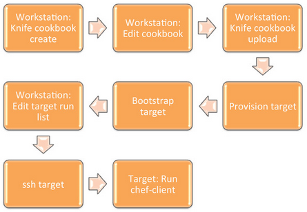

TDD with Chef
Fun with flags testing
Created by Simone Soldateschi / @soldasimo
Who am I?
Simone Soldateschi (@soldasimo)
- Snr DevOps Engineer based in Sydney
- Leading DevOps Engineering Team at Rackspace AU
- 15 years of experience as:
- SysAdmin
- SoftwareEng
- SysEng
- Been DevOps'in for the last 5-ish years
What is TDD?
Test Driven Development
Meaning...
write tests
see them fail
write code to pass tests
Sounds weird? ;)
How does this work?
no PowerPoint-like presentation
using the mouse is boring
and I don't have one
coding is fun
It's live-demo, with TDD!
How does this Live-Demo work?
Use TDD
Write Chef Cookbook
Deploy node.js web-app
Leverage Vagrant, Docker, or Cloud Server
Run this very presentation
Kinda recursively, isn't it? ;)
Before we get started...
"The" Usual way of coding
start coding
compile it
deploy artifacts
looks good?
Reactive approach
Chef Overview

Focus on this
Cooking with Chef
In short
code
test it
OK?
push it
KO?
fix it!
?
Install Chef DK
Test Kitchen
Foodcritic
and many others
Project Specs
Goal
Deploy this Node.js presentation
Tasks
Node.js should be installed
Checkout Git repository
Let the Internet access the web-server
Web-server should not run as root
Chef Supermarket
Let's cook
Grab Ruby Gems
Rubocop
A Ruby static code analyzer, based on the community Ruby style guide.
Foodcritic
Foodcritic is a lint tool for your Opscode Chef cookbooks.Rake
Rake is a simple ruby build program with capabilities similar to make.Check style
Unit Testing
TODORSpec and Serverspec
TODORun Unit Tests
TODOIntegration Testing
TODOTest Kitchen
TODOChef Zero
TODORun Integration Tests
TODOCheck all the things again
TODO...and again!
Links
- An Overview of Chef- Install Chef DK
- TDD with Chef, by Nathen Harvey
- reveal.js
DevOps jokes
When you think you have it under control -- devopsreactions
| Source | Quantity |
|---|---|
| The Big Bang Theory | 1 |
| Breaking Bad | 1 |
| Matrix | 1 |